Miyoshi, Hiroshima: things to do, food and stays
Miyoshi · Hiroshima
Miyoshi
Highlighted on the Hiroshima map.

Stay
ホテルルートイン三次駅前
Hotel Route Inn Sanji Ekimae
Hotel in Tokaichiminami, Miyoshi with buffet meals and breakfast available.
ホテル・アルファ－ワン三次
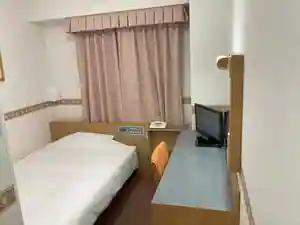
Hotel Arufa - Wan Sanji
Hotel in Tokaichinishi, Miyoshi; 2-minute drive from Jrsanji Station.
三次グランドホテル
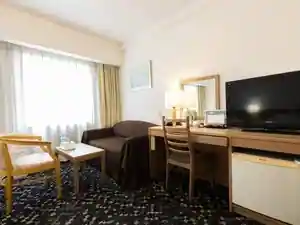
Sanji Grand Hotel
Hotel in Tokaichiminami, Miyoshi with business travelers.
備長炭の湯 ホテルクラウンヒルズ三次（ＢＢＨホテルグループ）
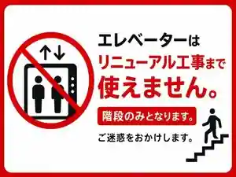
Bincho Sumi No Yu Hotel Kuraunhiruzu Sanji (BBH Hotel Gurupu)
ビジネスホテル三原
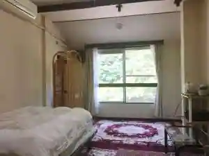
Business Hotel Mihara
Hotel in Mihara, Miyoshi with business travelers.
江の川カヌー公園さくぎ
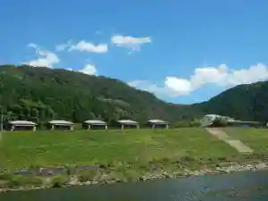
Ko No Kawa Kanu Koen Sakugi
Inn in Sakugi, Miyoshi with an irori hearth dining room.
Dining
お食事処 ながどて
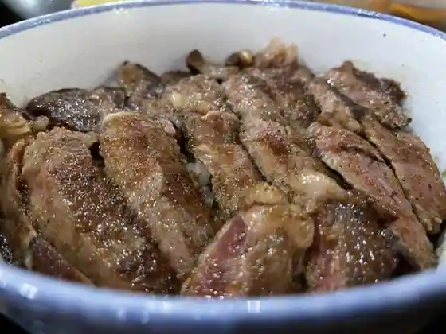
O Shokuji Tokoro Nagadote
たむ商店 三次駅前店
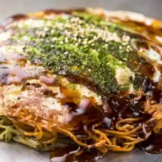
Tamu Sho Sanji Ekimae
お好み焼 鉄板焼 空
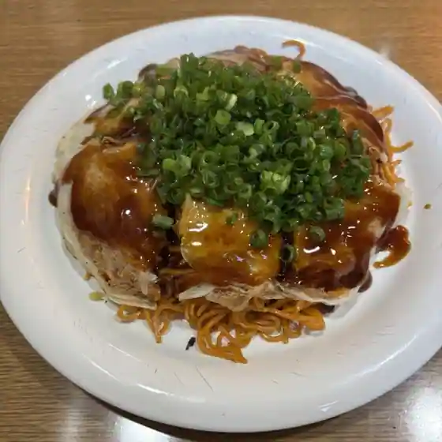
O Konomi Yaki Teppanyaki Sora
三良坂地豆腐処 豆遊
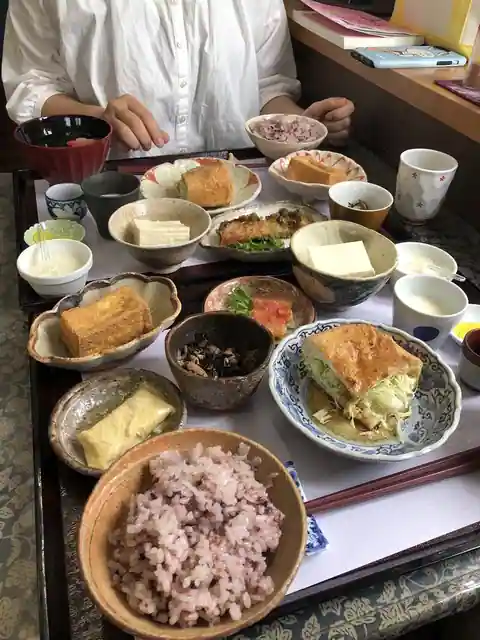
Mirasaka Jimame Fu Tokoro Mame Yu
ナベちゃん
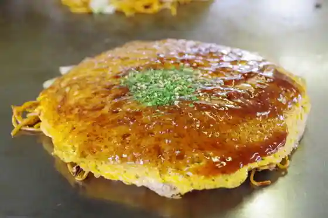
Nabe Chan
ムギムギカフェ
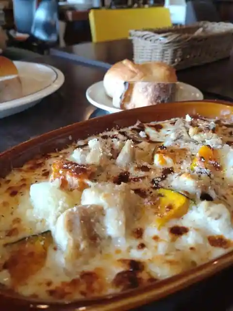
Mugimugi Cafe
とんかつ和佳葉
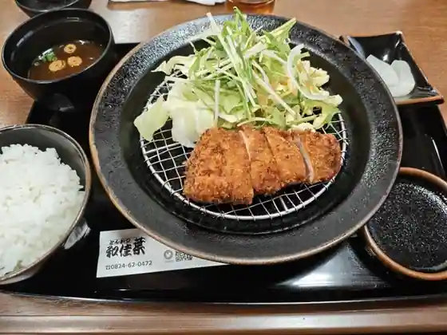
Tonkatsu Waka Ha
美与志ともえ
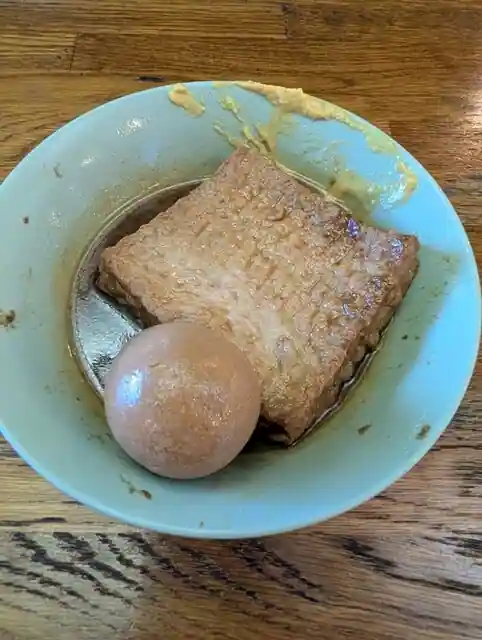
Miyo Kokorozashi Tomoe
雫
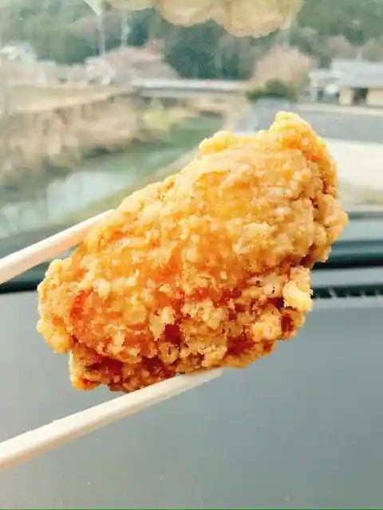
Shizuku
三良坂パン工房 麦麦
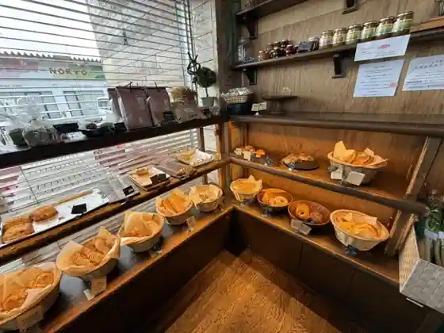
Mirasaka Bakery Kobo Mugi Mugi
じゃ軒
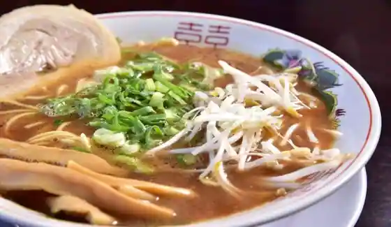
Ja Ken
トレッタみよしレストラン
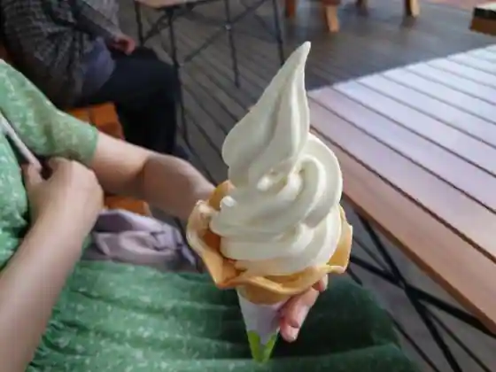
Toretta Miyoshi Restaurant
珈琲屋 スプレモ
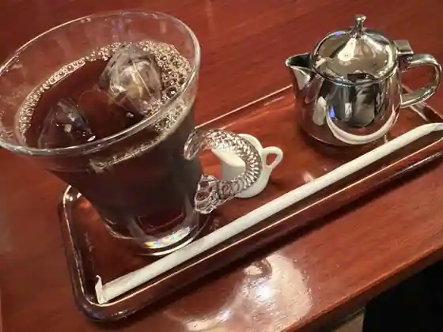
Coffee Ya Supuremo
佐々木豆腐店
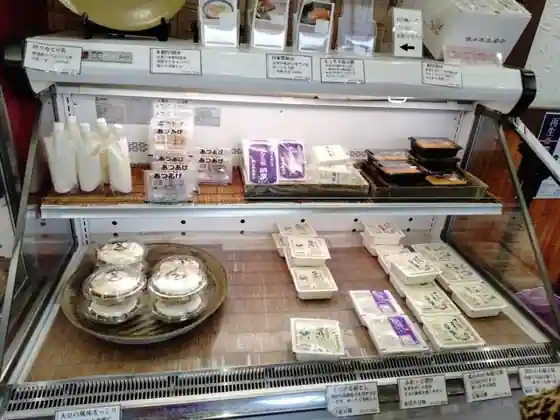
Sasaki Tofu
自家製麺 うどん日和
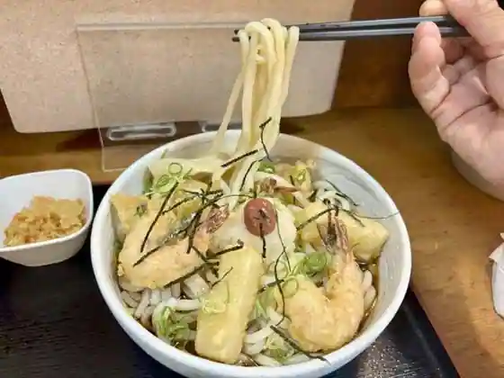
Jikasei Men Udon Hiyori
宝来屋
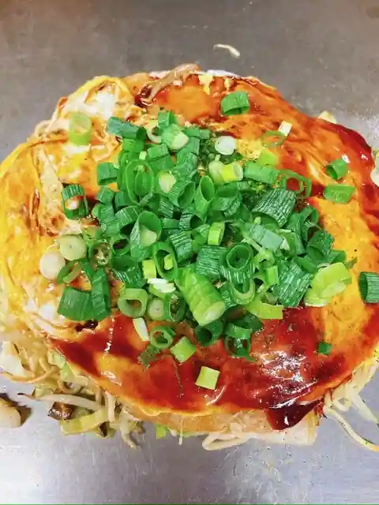
Horai Ya
土佐かつお丸 三次店
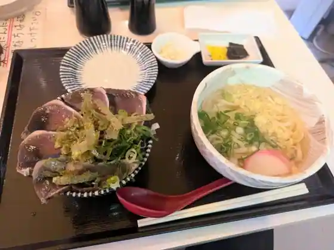
Tosa Katsuo Maru Sanji
くれ竹
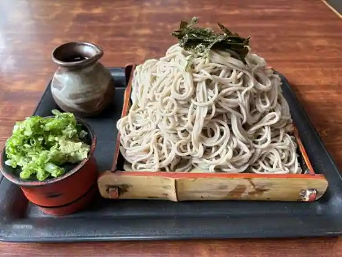
Kure Take
グリーン麦麦 トレッタみよし
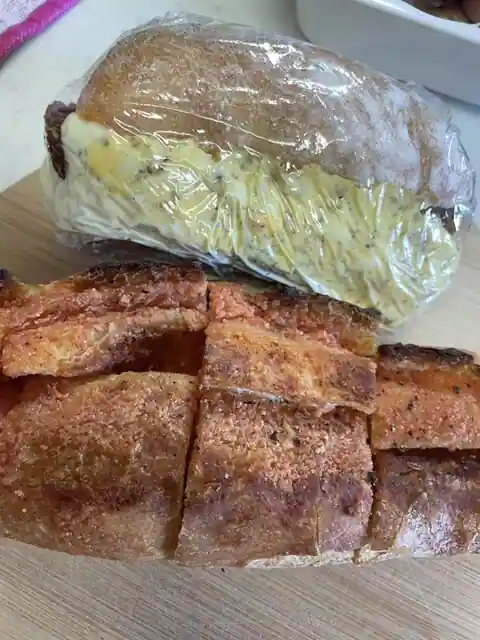
Gurin Mugi Mugi Toretta Miyoshi
まるごと布野のアイス屋さん
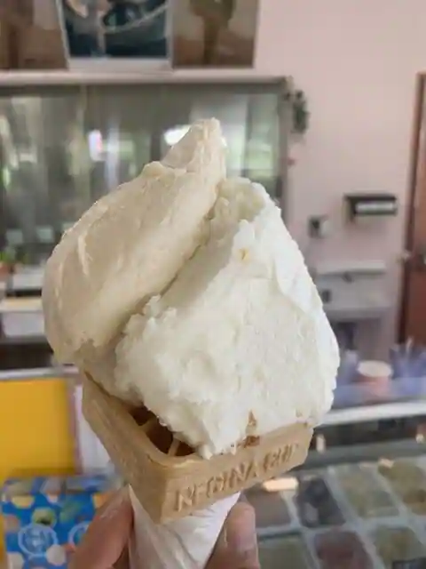
Marugoto Funo No Aisu Ya San
焼肉 ふるさと 三次
Yakiniku Furusato Sanji
三上貫栄堂
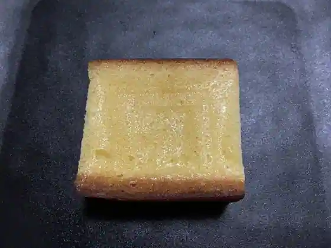
Mikami Kan Sakae Do
串げん
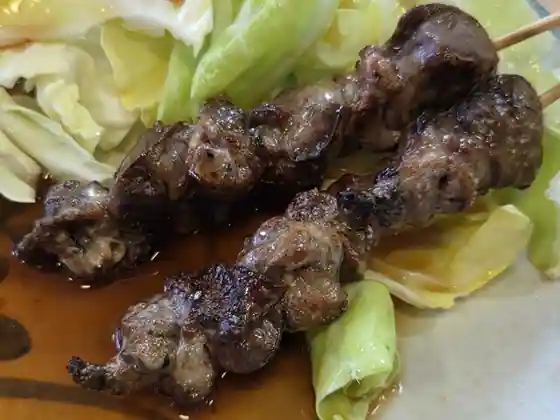
Kushi Gen
物産館みわ375
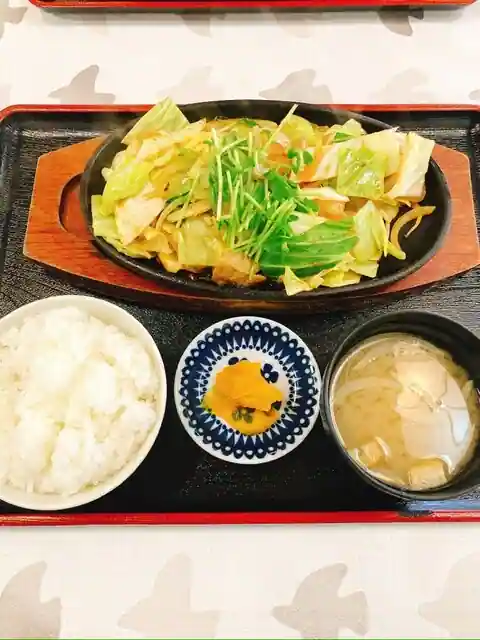
Bussan Kan Miwa 375
Sights
Koya Yama
Miyoshi Mo no no Ke Museum

Hiroshima Miyoshi Wainarii

Ozeki Yama Park

Miyoshi Eki